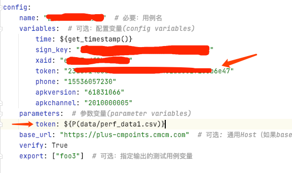

执行压力测试
HttpRunner3.1.0集成性能测试
通过重复使用Locust，您å¯ä»¥è¿›è¡Œè´Ÿè½½æµ‹è¯•ï¼Œè€Œæ— 需进行é¢å¤–的工作。
$ locusts -V
locust 1.0.3
为了充分利用它们，您可以运行locusts -h来查看帮助，并且您会发现它与locust -h相同。
启动locust
唯一的区别是-f /-locustfile参数。 当使用YAML/JSON测试用例文件指定-f时，它将首先转换为pytest，然后使用HttpRunner的内置locustfile（httprunner/ext/locust/locustfile.py）运行负载测试。
$ locusts -f examples/postman_echo/request_methods/request_with_variables.yml
2020-06-18 18:14:29.877 | INFO | httprunner.make:make_testcase:317 - start to make testcase: /Users/debugtalk/MyProjects/HttpRunner-dev/HttpRunner/examples/postman_echo/request_methods/request_with_variables.yml
2020-06-18 18:14:29.878 | INFO | httprunner.make:make_testcase:390 - generated testcase: /Users/debugtalk/MyProjects/HttpRunner-dev/HttpRunner/examples/postman_echo/request_methods/request_with_variables_test.py
2020-06-18 18:14:29.878 | INFO | httprunner.make:format_pytest_with_black:154 - format pytest cases with black ...
reformatted /Users/debugtalk/MyProjects/HttpRunner-dev/HttpRunner/examples/postman_echo/request_methods/request_with_variables_test.py
All done! ✨ 🍰 ✨
1 file reformatted, 1 file left unchanged.
[2020-06-18 18:14:30,241] LeodeMacBook-Pro.local/INFO/locust.main: Starting web interface at http://:8089
[2020-06-18 18:14:30,249] LeodeMacBook-Pro.local/INFO/locust.main: Starting Locust 1.0.3
注意事项
YAML性能测试脚本，当使用locusts执行性能测试时，config ä¸ parametersä¸çš„å˜é‡éœ€è¦åœ¨variables声明，否则会发生Error：参数找不到。 
locust所有功能
在这种情况下，您可以使用Locust的所有功能。
$ locusts -h
Usage: locust [OPTIONS] [UserClass ...]
Common options:
-h, --help show this help message and exit
-f LOCUSTFILE, --locustfile LOCUSTFILE
Python module file to import, e.g. '../other.py'.
Default: locustfile
--config CONFIG Config file path
-H HOST, --host HOST Host to load test in the following format:
http://10.21.32.33
-u NUM_USERS, --users NUM_USERS
Number of concurrent Locust users. Only used together
with --headless
-r HATCH_RATE, --hatch-rate HATCH_RATE
The rate per second in which users are spawned. Only
used together with --headless
-t RUN_TIME, --run-time RUN_TIME
Stop after the specified amount of time, e.g. (300s,
20m, 3h, 1h30m, etc.). Only used together with
--headless
-l, --list Show list of possible User classes and exit
Web UI options:
--web-host WEB_HOST Host to bind the web interface to. Defaults to '*'
(all interfaces)
--web-port WEB_PORT, -P WEB_PORT
Port on which to run web host
--headless Disable the web interface, and instead start the load
test immediately. Requires -u and -t to be specified.
--web-auth WEB_AUTH Turn on Basic Auth for the web interface. Should be
supplied in the following format: username:password
--tls-cert TLS_CERT Optional path to TLS certificate to use to serve over
HTTPS
--tls-key TLS_KEY Optional path to TLS private key to use to serve over
HTTPS
Master options:
Options for running a Locust Master node when running Locust distributed. A Master node need Worker nodes that connect to it before it can run load tests.
--master Set locust to run in distributed mode with this
process as master
--master-bind-host MASTER_BIND_HOST
Interfaces (hostname, ip) that locust master should
bind to. Only used when running with --master.
Defaults to * (all available interfaces).
--master-bind-port MASTER_BIND_PORT
Port that locust master should bind to. Only used when
running with --master. Defaults to 5557.
--expect-workers EXPECT_WORKERS
How many workers master should expect to connect
before starting the test (only when --headless used).
Worker options:
Options for running a Locust Worker node when running Locust distributed.
Only the LOCUSTFILE (-f option) need to be specified when starting a Worker, since other options such as -u, -r, -t are specified on the Master node.
--worker Set locust to run in distributed mode with this
process as worker
--master-host MASTER_HOST
Host or IP address of locust master for distributed
load testing. Only used when running with --worker.
Defaults to 127.0.0.1.
--master-port MASTER_PORT
The port to connect to that is used by the locust
master for distributed load testing. Only used when
running with --worker. Defaults to 5557.
Tag options:
Locust tasks can be tagged using the @tag decorator. These options let specify which tasks to include or exclude during a test.
-T [TAG [TAG ...]], --tags [TAG [TAG ...]]
List of tags to include in the test, so only tasks
with any matching tags will be executed
-E [TAG [TAG ...]], --exclude-tags [TAG [TAG ...]]
List of tags to exclude from the test, so only tasks
with no matching tags will be executed
Request statistics options:
--csv CSV_PREFIX Store current request stats to files in CSV format.
Setting this option will generate three files:
[CSV_PREFIX]_stats.csv, [CSV_PREFIX]_stats_history.csv
and [CSV_PREFIX]_failures.csv
--csv-full-history Store each stats entry in CSV format to
_stats_history.csv file
--print-stats Print stats in the console
--only-summary Only print the summary stats
--reset-stats Reset statistics once hatching has been completed.
Should be set on both master and workers when running
in distributed mode
Logging options:
--skip-log-setup Disable Locust's logging setup. Instead, the
configuration is provided by the Locust test or Python
defaults.
--loglevel LOGLEVEL, -L LOGLEVEL
Choose between DEBUG/INFO/WARNING/ERROR/CRITICAL.
Default is INFO.
--logfile LOGFILE Path to log file. If not set, log will go to
stdout/stderr
Step load options:
--step-load Enable Step Load mode to monitor how performance
metrics varies when user load increases. Requires
--step-users and --step-time to be specified.
--step-users STEP_USERS
User count to increase by step in Step Load mode. Only
used together with --step-load
--step-time STEP_TIME
Step duration in Step Load mode, e.g. (300s, 20m, 3h,
1h30m, etc.). Only used together with --step-load
Other options:
--show-task-ratio Print table of the User classes' task execution ratio
--show-task-ratio-json
Print json data of the User classes' task execution
ratio
--version, -V Show program's version number and exit
--exit-code-on-error EXIT_CODE_ON_ERROR
Sets the process exit code to use when a test result
contain any failure or error
-s STOP_TIMEOUT, --stop-timeout STOP_TIMEOUT
Number of seconds to wait for a simulated user to
complete any executing task before exiting. Default is
to terminate immediately. This parameter only needs to
be specified for the master process when running
Locust distributed.
User classes:
UserClass Optionally specify which User classes that should be
used (available User classes can be listed with -l or
--list)